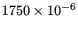

In CalculiX it is possible to perform steady-state hydraulic and aerodynamic network calculations, either as stand-alone applications, or together with mechanical and/or thermal calculations of the adjacent structures. Here, a stand-alone hydraulic network discussed in [10] is analyzed. The input deck pipe.f can be found in the test suite.
The geometry of the network is shown in Figure 25. It is a linear network consisting of:
All pipes are characterized by a Manning friction coefficient n=0.015. The input deck looks like:
** ** Structure: pipe connecting two reservoirs. ** Test objective: hydraulic network. ** *NODE,NSET=NALL 2,0.,0.,14.5 3,0.,0.,14.5 4,0.,0.,12.325 ... 26,14.9419,0.,6.5 *ELEMENT,TYPE=D,ELSET=EALL 1,0,2,3 2,3,4,5 ... 13,25,26,0 *MATERIAL,NAME=WATER *DENSITY 1000. *FLUID CONSTANTS 4217.,1750.E-6,273. *ELSET,ELSET=E1 2 *ELSET,ELSET=E2 3,5 *ELSET,ELSET=E3 4 *ELSET,ELSET=E4 6 *ELSET,ELSET=E5 7 *ELSET,ELSET=E6 8 *ELSET,ELSET=E7 9,11 *ELSET,ELSET=E8 10 *ELSET,ELSET=E9 12 *ELSET,ELSET=E10 1,13 *FLUID SECTION,ELSET=E1,TYPE=PIPE ENTRANCE,MATERIAL=WATER 0.031416,0.025133 *FLUID SECTION,ELSET=E2,TYPE=PIPE MANNING,MATERIAL=WATER 0.031416,0.05,0.015 *FLUID SECTION,ELSET=E3,TYPE=PIPE BEND,MATERIAL=WATER 0.031416,1.5,45.,0.4 *FLUID SECTION,ELSET=E4,TYPE=PIPE ENLARGEMENT,MATERIAL=WATER 0.031416,0.070686 *FLUID SECTION,ELSET=E5,TYPE=PIPE MANNING,MATERIAL=WATER 0.070686,0.075,0.015 *FLUID SECTION,ELSET=E6,TYPE=PIPE CONTRACTION,MATERIAL=WATER 0.070686,0.017671 *FLUID SECTION,ELSET=E7,TYPE=PIPE MANNING,MATERIAL=WATER 0.017671,0.0375,0.015 *FLUID SECTION,ELSET=E8,TYPE=PIPE GATE VALVE,MATERIAL=WATER 0.017671,0.5 *FLUID SECTION,ELSET=E9,TYPE=PIPE ENLARGEMENT,MATERIAL=WATER 0.017671,1.E6 *FLUID SECTION,ELSET=E10,TYPE=PIPE INOUT,MATERIAL=WATER *BOUNDARY 3,2,2,1.E5 25,2,2,1.E5 *STEP *HEAT TRANSFER,STEADY STATE *DLOAD EALL,GRAV,9.81,0.,0.,-1. *NODE PRINT,NSET=NALL U *END STEP
In CalculiX linear networks are modeled by means of 3-node network elements (D-type elements). In the corner nodes of the element the temperature and the pressure are unknown. They are assigned to the degrees of freedom 0 and 2, respectively. In the midside node the mass flux is unknown and is assigned to degree of freedom 1. The properties of the network elements are defined by the keyword *FLUID SECTION. They are treated extensively in Section 6.4 (gases), 6.5 (liquid pipes) and 6.6 (liquid channels). For the network at stake we need:
In the input deck, all these elements are defined as D-type elements, their nodes have the correct coordinates and by means of *FLUID SECTION cards each element is properly described. Notice that the dummy network entrance and exit elements are characterized by typeless *FLUID SECTION cards.
For a hydraulic network the material properties reduce to the density (on the *DENSITY card), the specific heat and the dynamic viscosity (both on the *FLUID SECTION card). The specific heat is only needed if heat transfer is being modeled. Here, this is not the case. The dynamic viscosity of water is  N s/m [34]. The boundary conditions reduce to the atmospheric pressure in node 3 and 25, both at the liquid surface of the reservoir. Remember that the pressure has the degree of freedom 2 in the corner nodes of the network elements.
Networks are only active in *COUPLED TEMPERATURE-DISPLACEMENT or *HEAT TRANSFER procedures. Here, we do not take the structure into account, so a heat transfer analysis will do. Finally, the gravity loading has to be specified, this is indeed essential for hydraulic networks. Regarding the nodal output, remember that NT requests degree of freedom 0, whereas U requests degrees of freedom 1 to 3. Since we are interested in the mass flux (DOF 1 in the middle nodes) and the pressure (DOF 2 in the corner nodes), U is selected underneath the *NODE PRINT line. Officially, U are displacements, and that's the way they are labeled in the .dat file.
The results in the .dat file look as follows:
displacements (vx,vy,vz) for set NALL and time 1.
2 8.9592E+01 0.0000E+00 0.0000E+00
3 0.0000E+00 1.0000E+05 0.0000E+00
4 8.9592E+01 0.0000E+00 0.0000E+00
5 0.0000E+00 1.3386E+05 0.0000E+00
6 8.9592E+01 0.0000E+00 0.0000E+00
7 0.0000E+00 1.2900E+05 0.0000E+00
8 8.9592E+01 0.0000E+00 0.0000E+00
9 0.0000E+00 1.2859E+05 0.0000E+00
10 8.9592E+01 0.0000E+00 0.0000E+00
11 0.0000E+00 1.5841E+05 0.0000E+00
12 8.9592E+01 0.0000E+00 0.0000E+00
13 0.0000E+00 1.6040E+05 0.0000E+00
14 8.9592E+01 0.0000E+00 0.0000E+00
15 0.0000E+00 1.9453E+05 0.0000E+00
16 8.9592E+01 0.0000E+00 0.0000E+00
17 0.0000E+00 1.7755E+05 0.0000E+00
18 8.9592E+01 0.0000E+00 0.0000E+00
19 0.0000E+00 1.8361E+05 0.0000E+00
20 8.9592E+01 0.0000E+00 0.0000E+00
21 0.0000E+00 1.5794E+05 0.0000E+00
22 8.9592E+01 0.0000E+00 0.0000E+00
23 0.0000E+00 1.6172E+05 0.0000E+00
24 8.9592E+01 0.0000E+00 0.0000E+00
25 0.0000E+00 1.0000E+05 0.0000E+00
26 8.9592E+01 0.0000E+00 0.0000E+00
The mass flux in the pipe (first DOF in the midside nodes, column 1) is constant and takes the value 89.592 kg/s. This agrees well with the result in [10] of 89.4 l/s. Since not all node and element definitions are listed it is useful for the interpretation of the output to know that location A corresponds to node 5, location B to nodes 7-9, location C to nodes 11-13, location D to nodes 15-17, location E to nodes 19-21 and location F to node 23. The second column in the result file is the pressure. It shows that the bend, the valve and the contraction lead to a pressure decrease, whereas the enlargement leads to a pressure increase (the velocity drops).
If the structural side of the network (e.g. pipe walls) is modeled too, the fluid pressure can be mapped automatically onto the structural element faces. This is done by labels of type PxNP in the *DLOAD card.